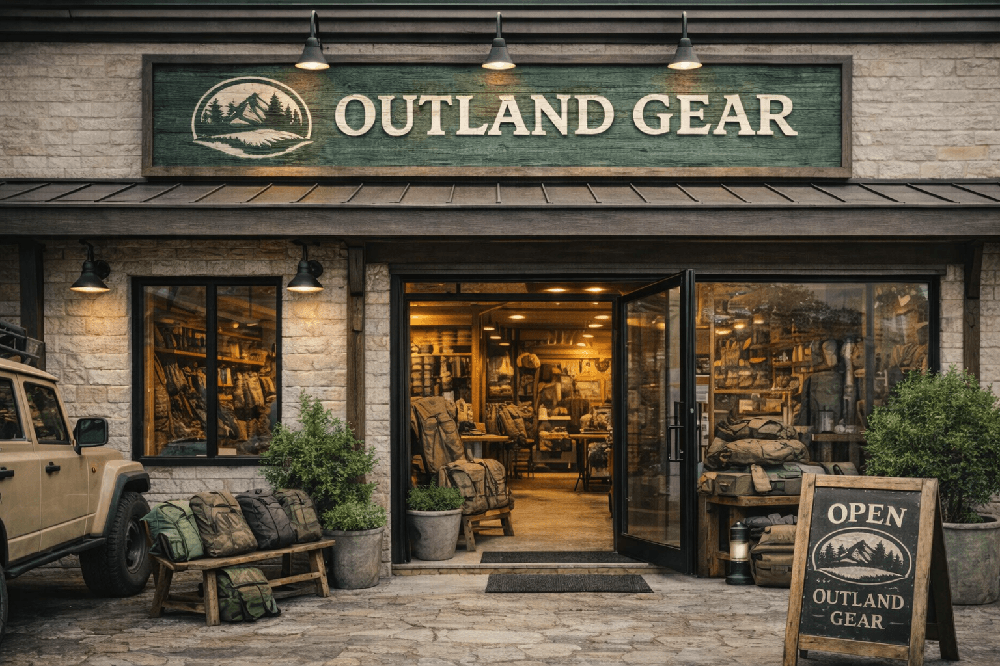

O sklepie
Sprzęt wybrany pod realne scenariusze wyjazdu
Outland Gear łączy estetykę nowoczesnego sklepu z selekcją produktów, które mają sens w użyciu. Stawiamy na rzeczy do codziennego noszenia, krótkich wyjazdów i prostych setupów outdoorowych, zamiast przeładowywać ofertę przypadkowymi kategoriami.
Dlatego obok samego produktu liczy się dla nas też kontekst wyboru: czy łatwo porównać parametry, czy opis pomaga podjąć decyzję i czy da się szybciej skompletować zestaw bez przekopywania całego katalogu.
